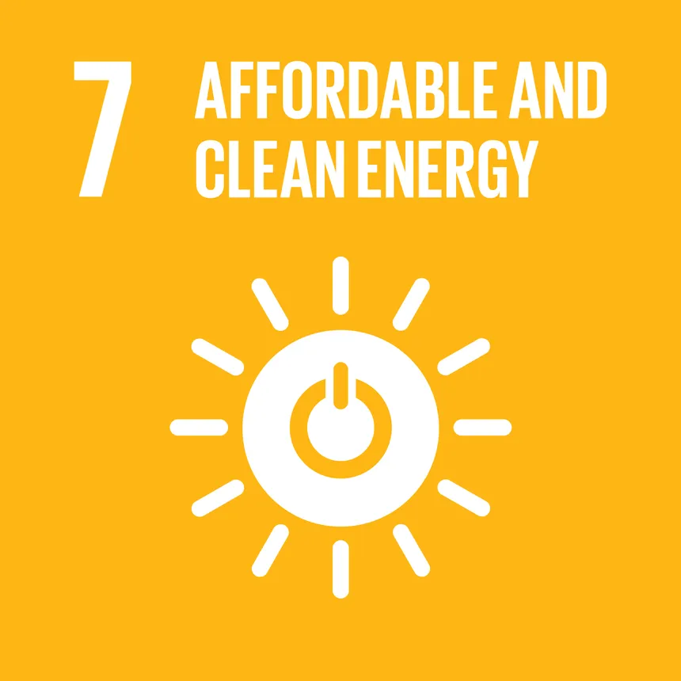
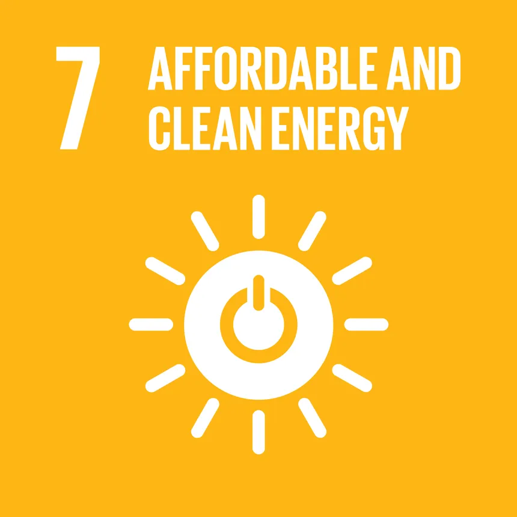

Conflict, insecurity, weak institutions and limited access to justice remain a great threat to sustainable development.
The number of people fleeing war, persecution and conflict exceeded 70 million in 2018, the highest level recorded by the UN refugee agency (UNHCR) in almost 70 years.
In 2019, the United Nations tracked 357 killings and 30 enforced disappearances of human rights defenders, journalists and trade unionists in 47 countries.
And the births of around one in four children under age 5 worldwide are never officially recorded, depriving them of a proof of legal identity crucial for the protection of their rights and for access to justice and social services.
TARGETS
16.1 Significantly reduce all forms of violence and related death rates everywhere
16.2 End abuse, exploitation, trafficking and all forms of violence against and torture of children
16.3 Promote the rule of law at the national and international levels and ensure equal access to justice for all
16.4 By 2030, significantly reduce illicit financial and arms flows, strengthen the recovery and return of stolen assets and combat all forms of organized crime
16.5 Substantially reduce corruption and bribery in all their forms
16.6 Develop effective, accountable and transparent institutions at all levels
16.7 Ensure responsive, inclusive, participatory and representative decision-making at all levels
16.8 Broaden and strengthen the participation of developing countries in the institutions of global governance
16.9 By 2030, provide legal identity for all, including birth registration
16.10 Ensure public access to information and protect fundamental freedoms, in accordance with national legislation and international agreements
16.A Strengthen relevant national institutions,including through international cooperation, for building capacity at all levels, in particular in developing countries, to prevent violence and combat terrorism and crime
16.B Promote and enforce non-discriminatory laws and policies for sustainable development
Click the respective images to know more about the SDG's:


 
